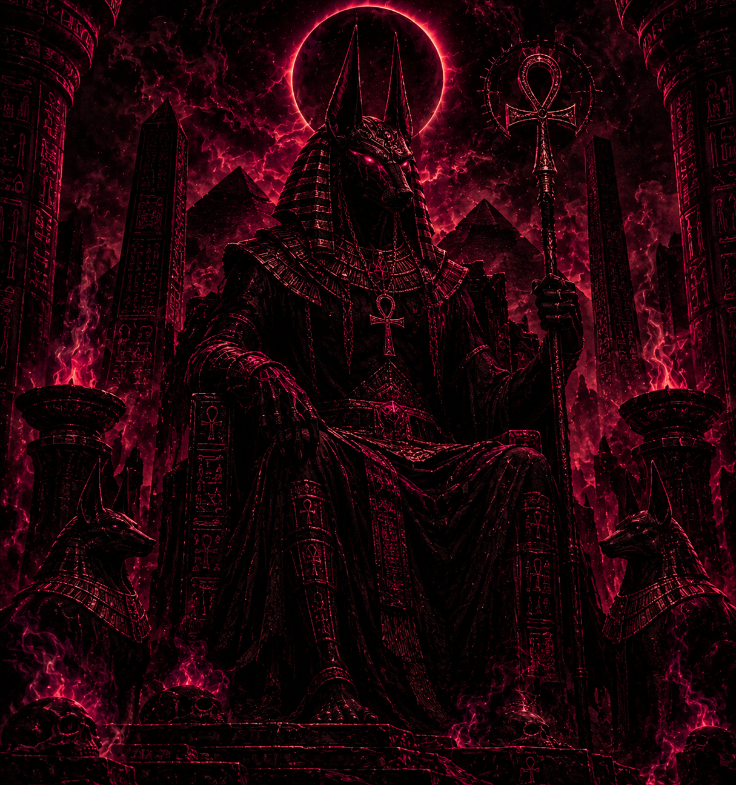
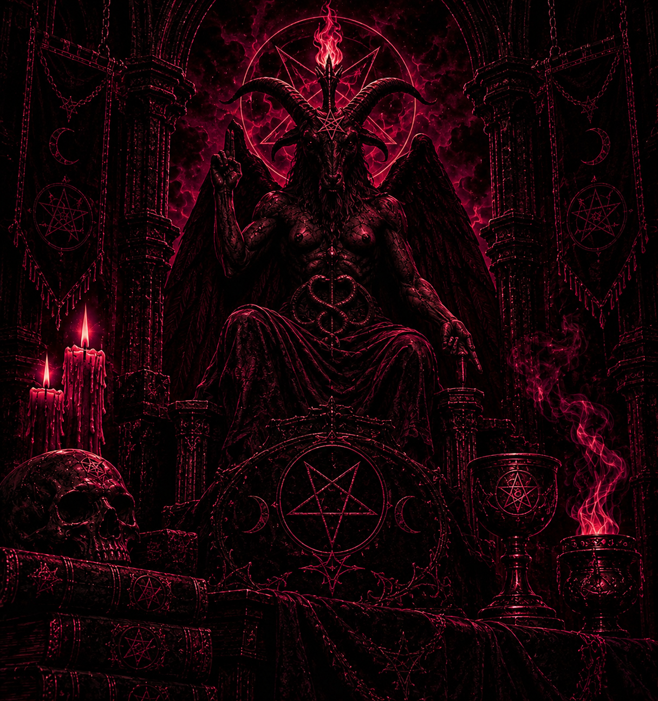

❝MITOLOGÍA EGIPCIA❞
𝔸ℕ𝕌𝔹𝕀𝕊
𝑫𝒆𝒊𝒅𝒂𝒅 𝒗𝒊𝒏𝒄𝒖𝒍𝒂𝒅𝒂 𝒄𝒐𝒏 𝒍𝒐𝒔 𝒓𝒊𝒕𝒐𝒔 𝒇𝒖𝒏𝒆𝒓𝒂𝒓𝒊𝒐𝒔, 𝒍𝒂 𝒑𝒓𝒐𝒕𝒆𝒄𝒄𝒊ó𝒏 𝒅𝒆 𝒍𝒂𝒔 𝒕𝒖𝒎𝒃𝒂𝒔 𝒚 𝒆𝒍 𝒓𝒆𝒄𝒐𝒓𝒓𝒊𝒅𝒐 𝒒𝒖𝒆 𝒉𝒂𝒄𝒆𝒏 𝒍𝒐𝒔 𝒎𝒖𝒆𝒓𝒕𝒐𝒔.
𝓔𝓧𝓟𝓛𝓞𝓡𝓐𝓡 𝓡𝓔𝓖𝓘𝓢𝓣𝓡𝓞𝓐𝓡𝓒𝓗𝓘𝓥𝓞 🅘· 𝓢𝓔𝓡𝓔𝓢 𝓓𝓔 𝓛𝓞 𝓓𝓔𝓢𝓒𝓞𝓝𝓞𝓒𝓘𝓓𝓞
𝗙𝗶𝗴𝘂𝗿𝗮𝘀 𝘀𝗼𝗯𝗿𝗲𝗻𝗮𝘁𝘂𝗿𝗮𝗹𝗲𝘀, 𝗲𝘀𝗽𝗶𝗿𝗶𝘁𝘂𝘀 𝘆 𝘀𝗲𝗿𝗲𝘀 𝗰𝘂𝘆𝗮 𝗽𝗿𝗲𝘀𝗲𝗻𝗰𝗶𝗮 𝗵𝗮 𝗺𝗮𝗿𝗰𝗮𝗱𝗼 𝗹𝗮𝘀 𝗰𝗿𝗲𝗲𝗻𝗰𝗶𝗮𝘀 𝘆 𝗺𝗶𝘁𝗼𝗹𝗼𝗴í𝗮𝘀 𝗱𝗲 𝗱𝗶𝘀𝘁𝗶𝗻𝘁𝗮𝘀 𝗰𝗶𝘃𝗶𝗹𝗶𝘇𝗮𝗰𝗶𝗼𝗻𝗲𝘀.
𝓡𝓔𝓖𝓘𝓢𝓣𝓡𝓞 𝓓𝓔 𝓛𝓞 𝓢𝓞𝓑𝓡𝓔𝓝𝓐𝓣𝓤𝓡𝓐𝓛
𝑬𝒙𝒑𝒍𝒐𝒓𝒂 𝒍𝒂𝒔 𝒇𝒊𝒈𝒖𝒓𝒂𝒔 𝒒𝒖𝒆 𝒉𝒂𝒃𝒊𝒕𝒂𝒏 𝒍𝒂𝒔 𝒍𝒆𝒚𝒆𝒏𝒅𝒂𝒔, 𝒓𝒆𝒍𝒊𝒈𝒊𝒐𝒏𝒆𝒔 𝒚 𝒕𝒓𝒂𝒅𝒊𝒄𝒊𝒐𝒏𝒆𝒔 𝒅𝒆 𝒅𝒊𝒔𝒕𝒊𝒏𝒕𝒂𝒔 𝒄𝒖𝒍𝒕𝒖𝒓𝒂𝒔.

𝑫𝒆𝒊𝒅𝒂𝒅 𝒗𝒊𝒏𝒄𝒖𝒍𝒂𝒅𝒂 𝒄𝒐𝒏 𝒍𝒐𝒔 𝒓𝒊𝒕𝒐𝒔 𝒇𝒖𝒏𝒆𝒓𝒂𝒓𝒊𝒐𝒔, 𝒍𝒂 𝒑𝒓𝒐𝒕𝒆𝒄𝒄𝒊ó𝒏 𝒅𝒆 𝒍𝒂𝒔 𝒕𝒖𝒎𝒃𝒂𝒔 𝒚 𝒆𝒍 𝒓𝒆𝒄𝒐𝒓𝒓𝒊𝒅𝒐 𝒒𝒖𝒆 𝒉𝒂𝒄𝒆𝒏 𝒍𝒐𝒔 𝒎𝒖𝒆𝒓𝒕𝒐𝒔.
𝓔𝓧𝓟𝓛𝓞𝓡𝓐𝓡 𝓡𝓔𝓖𝓘𝓢𝓣𝓡𝓞𝑭𝒊𝒈𝒖𝒓𝒂 𝒑𝒓𝒆𝒔𝒆𝒏𝒕𝒆 𝒆𝒏 𝒅𝒊𝒔𝒕𝒊𝒏𝒕𝒂𝒔 𝒕𝒓𝒂𝒅𝒊𝒄𝒊𝒐𝒏𝒆𝒔 𝒚 𝒓𝒆𝒍𝒂𝒕𝒐𝒔, 𝒄𝒖𝒚𝒂 𝒓𝒆𝒑𝒓𝒆𝒔𝒆𝒏𝒕𝒂𝒄𝒊ó𝒏 𝒉𝒂 𝒄𝒂𝒎𝒃𝒊𝒂𝒅𝒐 𝒂 𝒕𝒓𝒂𝒗é𝒔 𝒅𝒆 𝒍𝒐𝒔 𝒔𝒊𝒈𝒍𝒐𝒔.
𝓔𝓧𝓟𝓛𝓞𝓡𝓐𝓡 𝓡𝓔𝓖𝓘𝓢𝓣𝓡𝓞
𝑭𝒊𝒈𝒖𝒓𝒂 𝒔𝒊𝒎𝒃ó𝒍𝒊𝒄𝒂 𝒂𝒔𝒐𝒄𝒊𝒂𝒅𝒂 𝒂 𝒅𝒊𝒇𝒆𝒓𝒆𝒏𝒕𝒆𝒔 𝒊𝒏𝒕𝒆𝒓𝒑𝒓𝒆𝒕𝒂𝒄𝒊𝒐𝒏𝒆𝒔 𝒇𝒊𝒍𝒐𝒔ó𝒇𝒊𝒄𝒂𝒔, 𝒆𝒔𝒐𝒕é𝒓𝒊𝒄𝒂𝒔 𝒚 𝒓𝒆𝒍𝒊𝒈𝒊𝒐𝒔𝒂𝒔.
𝓔𝓧𝓟𝓛𝓞𝓡𝓐𝓡 𝓡𝓔𝓖𝓘𝓢𝓣𝓡𝓞